From stalling at proof of concept to $800K in new sales.
A prospect’s admin would log in for a proof of concept, get lost within the hour, and the deal would stall. The expected fix was to polish the worst screens. Instead, I traced 140 issues to four root causes and rebuilt the product around the two moments that decided every deal.
DURATION
7 months
ROLE
Design lead
TEAM
2 PMs · 40 eng
USERS
Security admins
STATUS
LIVE in production
RESULT
$800K new sales
$800Kin new sales after launch
11% → 18%conversion rate, within 6 months
½ the timedeployment, 3 weeks → 1.5 weeks
4.8★rated by customers on Gartner Peer Insights
← BEFORE14 flat items, organised by database object5 groups, organised by what the admin is trying to doAFTER →
On paper it matched CyberArk and Delinea. In a prospect’s hands, it lost the deal in the first hour.
Privileged access management decides who can touch a company’s most sensitive systems: production databases, servers, admin accounts. When it fails, the cost is not a bad experience. It is a breach. So buyers judge a PAM product on one question above all others: can my team run this safely from day one?
Our product had every capability that mattered: vaulting, session recording, access policies, discovery and MFA. Then a prospect’s admin logged in for a proof of concept and found 14 ungrouped navigation items, workflows split across sections, and failures that happened without a word. Within the first hour, they were calling support. Even our own sales engineers sometimes asked me where a feature lived.
11%TRIAL TO PAID CONVERSION
3 weeksAVERAGE TIME TO DEPLOY
First 30 minWHERE POC DEALS STALLED
This was not a feature gap. It was a comprehension gap, and it was costing us deals.
Add their first server14 nav items, none called “add a resource”RC1
STEP01
Store the server’s admin credentialCredentials live under “System Users.” Users live somewhere else.RC2
STEP02
Run discovery on the network200 accounts found. No next step.RC3
STEP03
Give a teammate accessResource, policy and role sit in three sections that don’t talkRC3
STEP04
Launch a test sessionIt failed. Nothing said why.RC4
STEP05
30:00 · THE ENDCalls support. Proof of concept stalls.
00:00 → 30:00 · ONE PROSPECT ADMIN, ALONEThe first 30 minutes of a proof of concept
02 / 07
The diagnosis
Before touching a screen, I rebuilt 10 real admin scenarios. 140 issues traced back to 4 root causes, and 2 scenarios decided every deal.
The instinct was to redesign the worst screens first. I pushed back for two weeks. Instead, I rebuilt real admin scenarios from customer success call recordings and support tickets: day one onboarding, break glass during a Sev 1, rotating 200+ credentials, and the audit review before a compliance call.
10SCENARIOS
4PERSONAS
140ISSUES
3 weeksTO FIND THE ROOT CAUSES
RC1Fragmented information architecture14 flat nav items. You had to know the internal object model to find anything.
RC2Broken domain terminologyNew admins spent their first week translating the interface.
RC3No workflow continuityJIT, approvals and break glass were missing or scattered.
RC4Silent failure statesErrors weren’t surfaced, so admins couldn’t tell what broke.
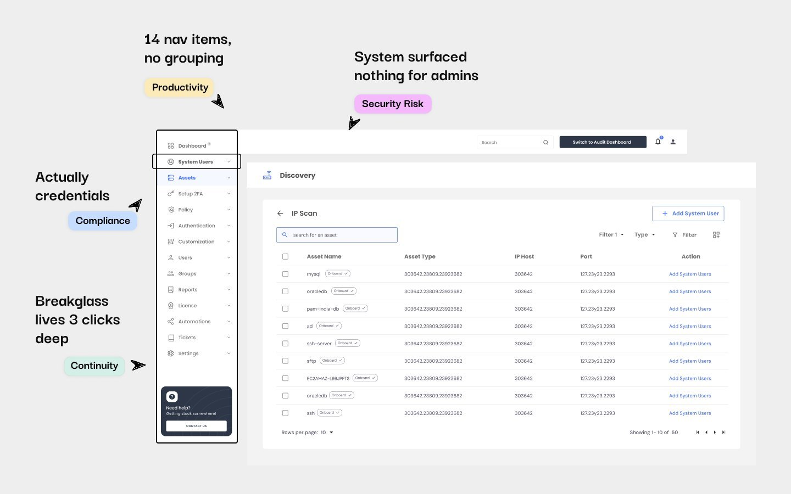
RC1RC4RC2RC3
FIG. 2 — FOUR ROOT CAUSES, FOUND IN THE ORIGINAL PRODUCTthe pieces were all there. nothing held them together.
Where to start. The PM wanted Kano, the eng lead wanted RICE, and the two frameworks we’d tried the quarter before had given us two different answers. I suggested something blunter.
THE ONLY QUESTIONDoes this directly strengthen one of the five capabilities that win or lose an enterprise PAM deal?
Vault and RotationDiscovery and InventorySession Proxying and RecordingAccess GovernanceIntegrations and Auditability
RESULT
140+→14→6ISSUESPRIORITIESMUST FIX
30% of nice-to-have scope discussions cut. Engineering unblocked for two quarters.
THE HARDEST CALLSelf-service access, ranked lastSelf-service should scale safe access, not unsafe autonomy. It waits until the core access loop is trustworthy.
“Her audits are surgical. She found 140+ issues across our product and ranked them so we could ship fixes inside a quarter.”
I redesigned in the order my audit set: fix the structure first, then rebuild the two journeys every admin depends on, getting set up and granting access.
FOUNDATION
Navigation by intent
FIXES RC1
The old navigation was organised by database object: System Users, Groups, Certificates, Policies. The new one is organised by what the admin is trying to do. Break glass now lives under Security Ops, and an admin can find it on day one without the docs.
14→5FLAT ITEMS → INTENT GROUPS
How I got to five groups: I followed the audit’s own recommendation and grouped all 14 items by workflow phase, meaning the stage of the admin’s job each one serves: setting up, controlling access, running security operations and configuring identity, with an overview on top. Then I walked each audit scenario through the new structure to check that the admin stayed inside one group instead of jumping across the nav.
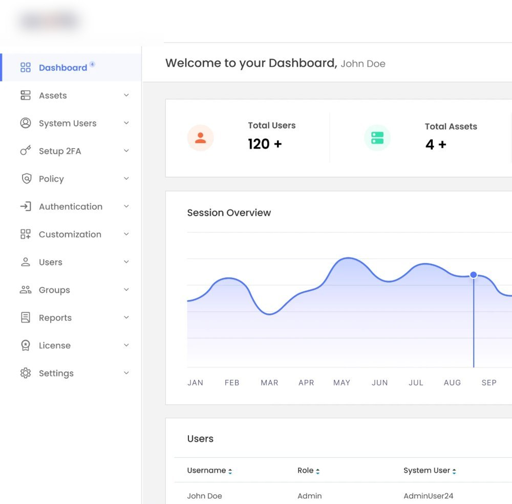
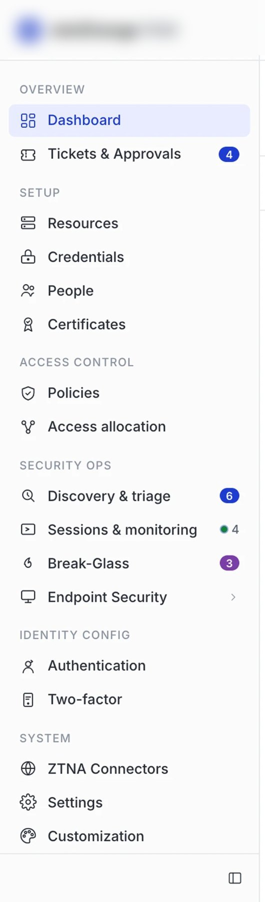
before, by object → after, by intent
FLOW A
Day one onboarding
FIXES RC3 + RC4
THE OLD PATH
Setting up identity alone meant 14 tasks spread across 4 sections: Authentication, Users, Settings and Two Factor. Role mapping was buried in the second scroll of the SSO config. A failed directory bind gave no reason, whether a wrong URL, wrong credentials or a network issue. The only way to test a synced login was hidden inside “Show Machine Scan Results.” A first-time admin needed a support call every time.
4 sections→1 guided flow
WHAT I EXPLORED
REJECTEDPatch each screen where it lives · The audit showed these gaps were structural. One logical setup sat across four sections, and no screen-level fix could connect them.
REJECTEDOne long setup wizard · The audit had already shown what happens when every field arrives at once. The LDAP form overwhelmed first-time admins.
CHOSENSeven-stage onboarding · It breaks setup into stages an admin can finish and verify one at a time, and it turns setup into the proof of concept itself.
THE DECISION
Seven stages in the order a real deployment happens: connect the directory → discover resources → vault credentials → configure a policy → allocate access → confirm recording → test the first connection. Each stage ends in something the admin can confirm worked before moving on, so a proof of concept moves forward instead of stalling on a silent failure.
THE SEVEN-STAGE MAP
01Connect your directory5–10 MIN
02Discover & import resources5–15 MIN
03Vault credentials5–10 MIN
04Configure a policy5 MIN
05Allocate access5 MIN
06Set up session recording2 MIN
07Test your first connection5 MIN
Times are the estimates shown to the admin on the welcome screen.
THE FIRST SCREEN
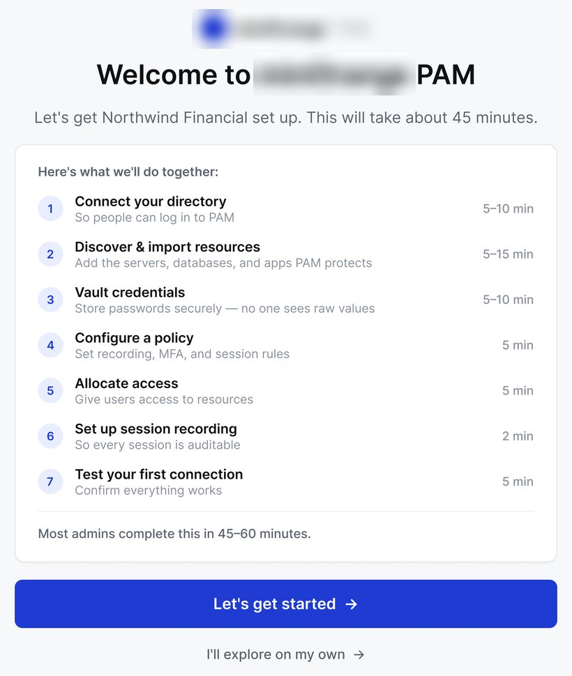
the whole path, timed, before the admin commits to it. exploring alone stays one click away.
FIG. 3a — ONBOARDING · THE MAPseven stages, each one verified
01DIRECTORY
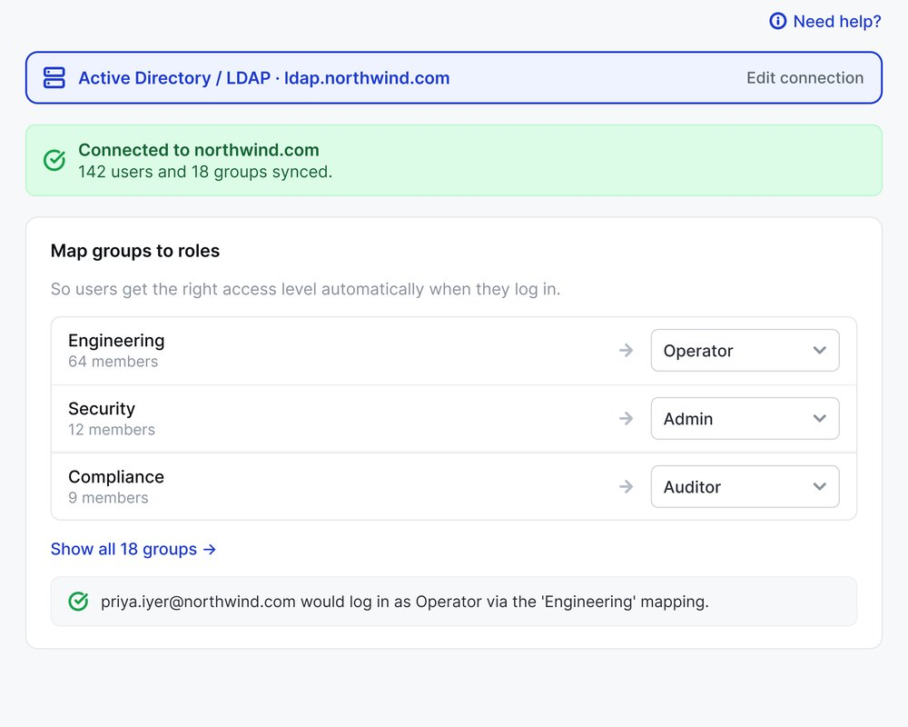
Connected: 142 users and 18 groups synced. Groups map to PAM roles, and a preview shows which role one real user would log in with.
02RESOURCES
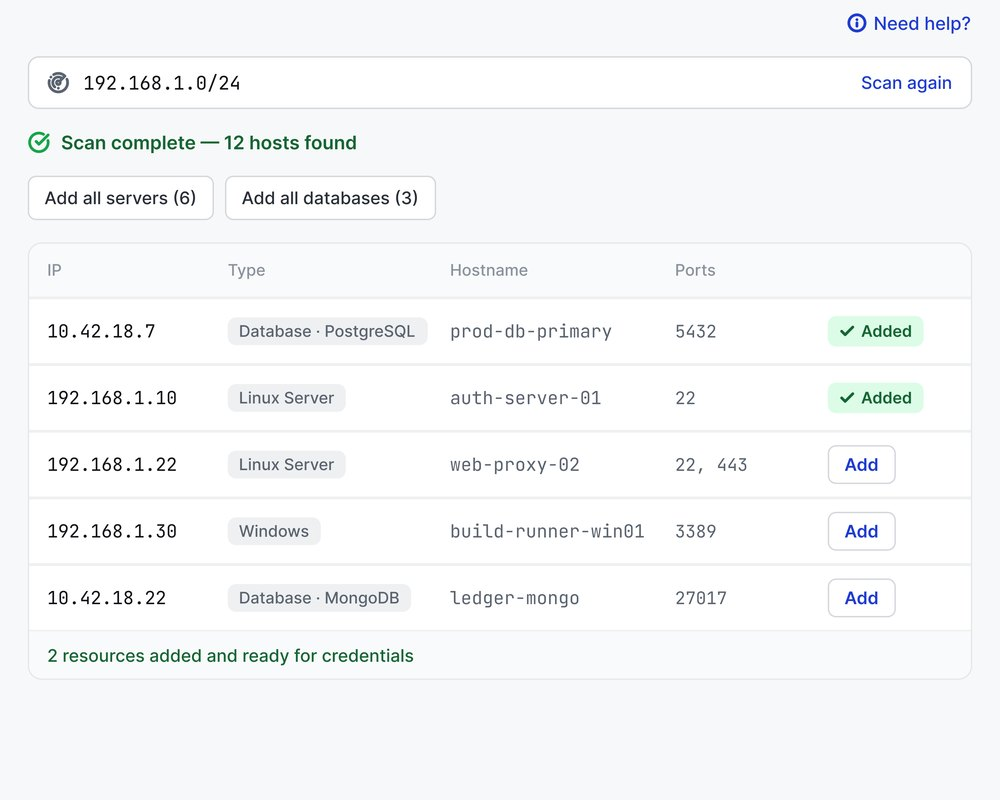
A network scan finds 12 hosts. The admin adds only what PAM should protect, host by host or all servers at once.
03CREDENTIALS
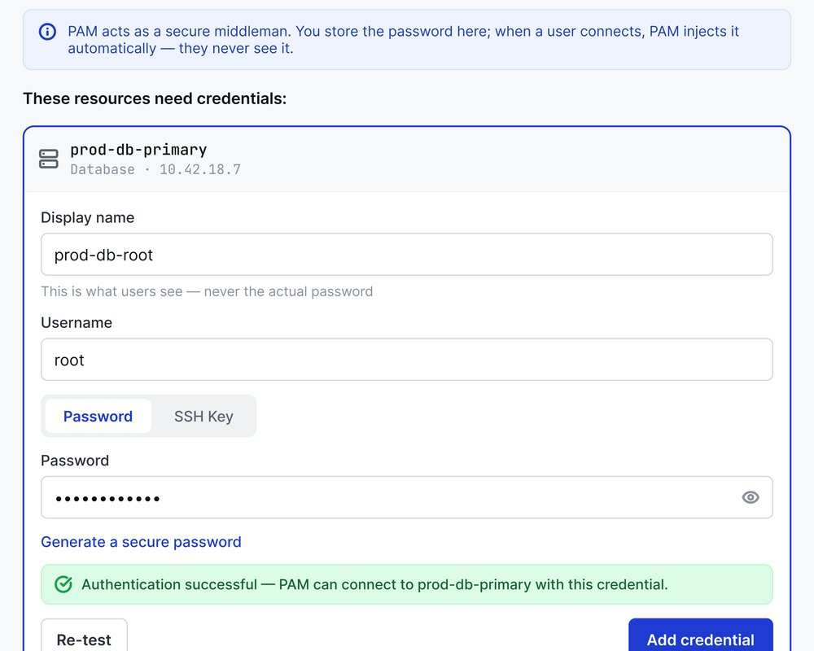
Each credential is tested the moment it is entered. The admin sees it authenticate before saving it.
04POLICY
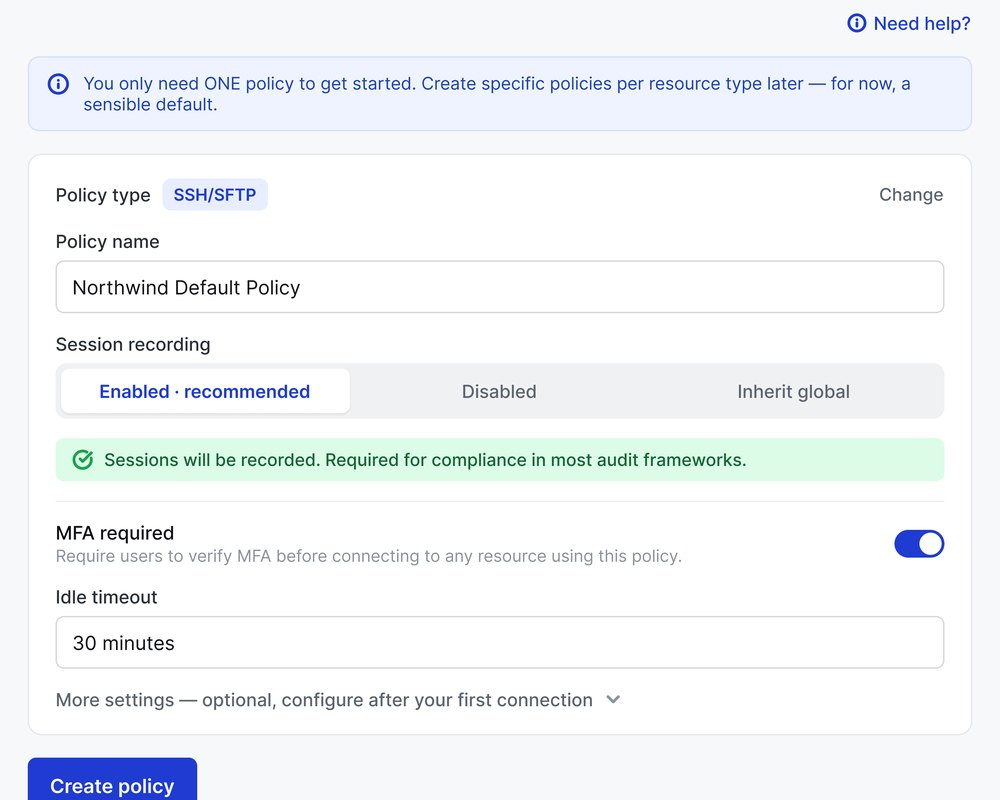
One default policy to start: recording on, MFA required, a 30-minute idle timeout. Everything else waits until after the first connection.
05ACCESS
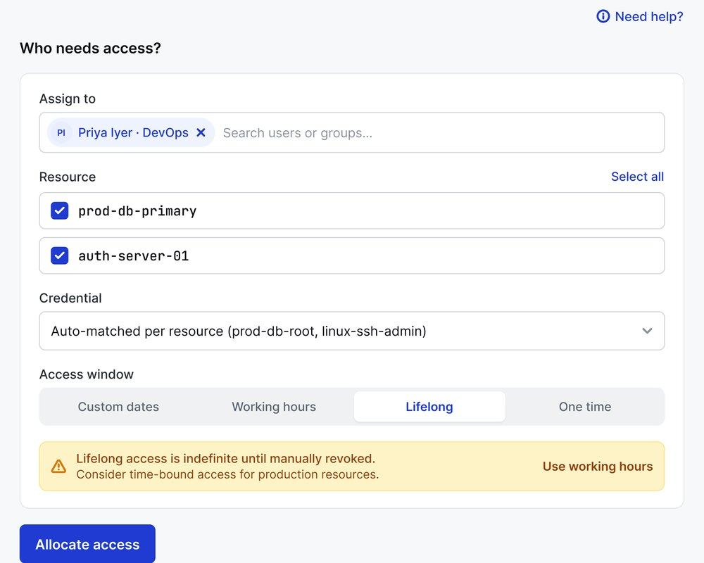
Lifelong access is allowed, but flagged, with working hours one click away.
06RECORDING
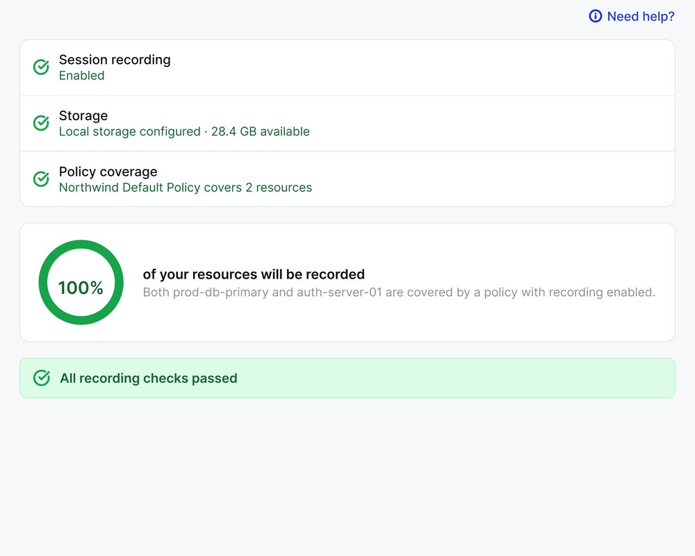
Coverage is shown as a share of resources, the number an auditor asks for.
07TEST
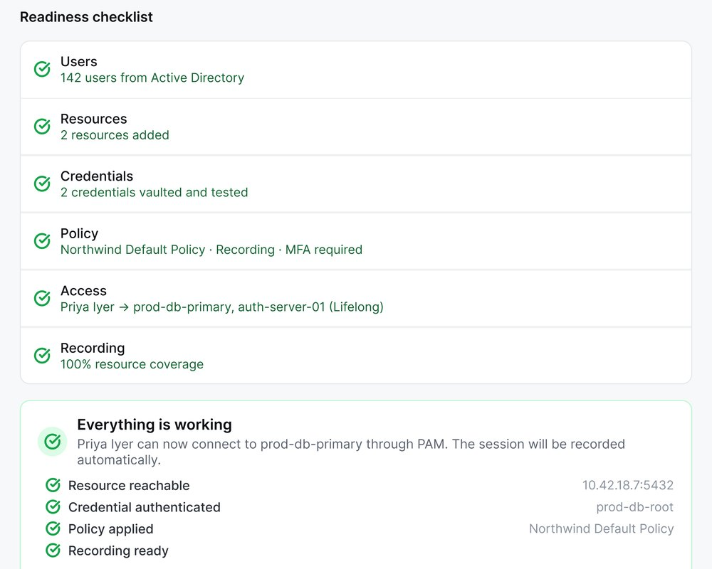
A readiness checklist, then a simulated connection as the first real user: resource reachable, credential authenticated, policy applied, recording ready.
✓DONE
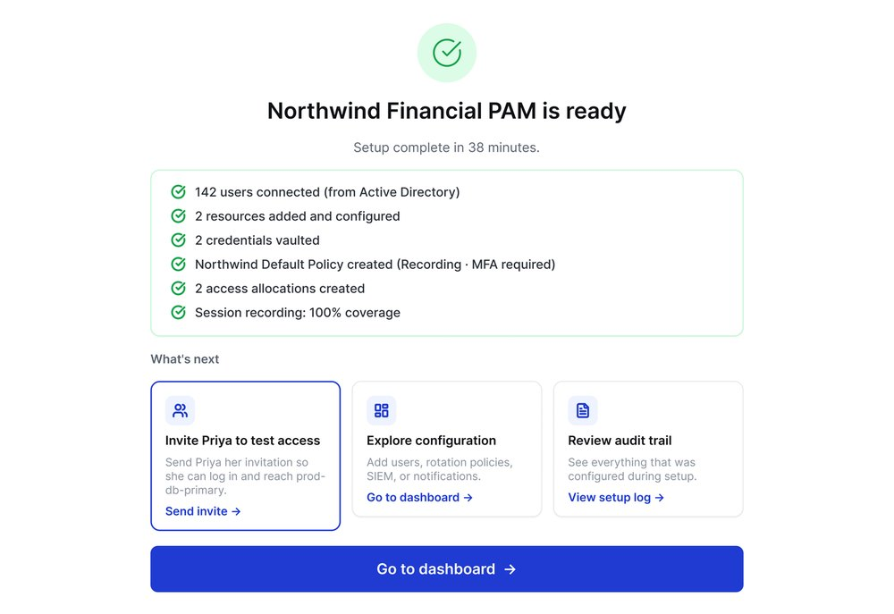
The summary lists exactly what was configured, and the first next step names the first real user.
FIG. 3b — EVERY STAGE ENDS IN PROOFnothing moves on silently
SKIPPING A STAGE
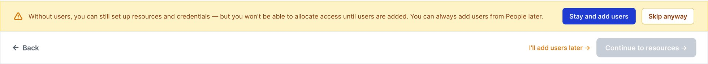
skipping is allowed. the cost is named first.
COMING BACK LATER
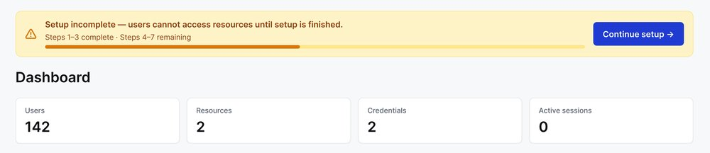
the dashboard says what is still blocked, not just what is left.
AFTER CORE SETUP
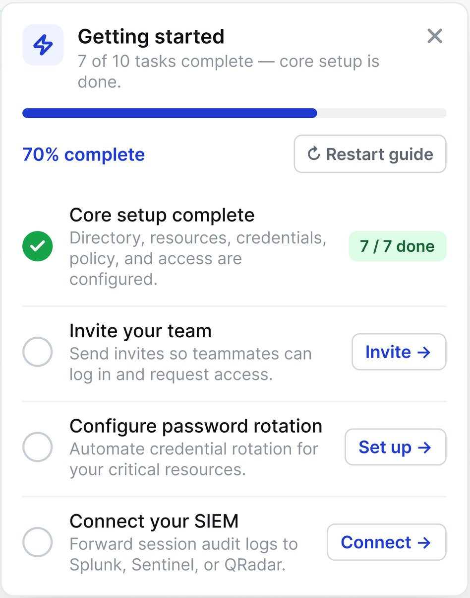
what remains shrinks to a short list of extras.
RESUMING
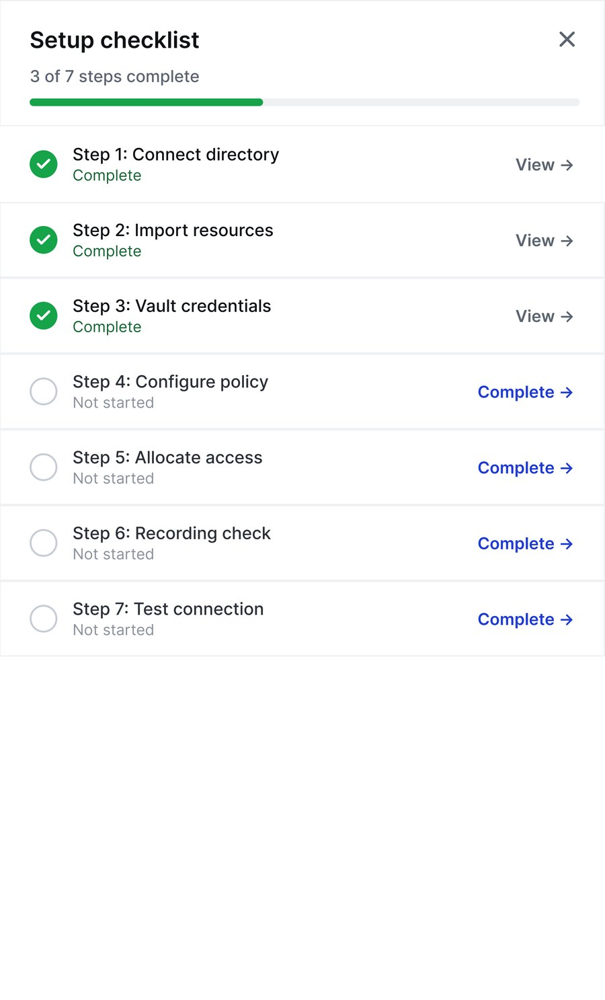
resume from the exact step, or dismiss and finish alone.
FIG. 3c — LEAVING MID-SETUPnobody gets trapped in a wizard
FLOW B
Access, from the resource
FIXES RC3
THE OLD PATH
Granting access to one resource meant creating it, attaching a credential, mapping a policy and assigning users, each in a different section, for 4 or more nav visits per resource. Once granted, current access couldn’t be viewed anywhere in the product. Requests arrived only as notification bell items, approval rules lived under Settings, and an approved ticket couldn’t be revoked. Every grant was standing access. JIT, multi-level approval and break glass didn’t exist.
4+ nav visits→1 resource record
WHAT I EXPLORED
REJECTEDUpgrade the notification-bell approvals · The audit found that access governance was a notification, not a workflow. A better bell is still a bell.
REJECTEDA standalone access-request module · Requests in one place, resource config in another and audit history in a third would rebuild the same scatter the audit diagnosed.
CHOSENThe resource as the anchor, with JIT inside it · Credentials, policies, access and audit history all attach to the resource, so one logical task happens in one place.
THE DECISION
Every resource now has its own workspace with tabs for credentials, policy, access, sessions and audit trail. Access is requested and approved from inside the resource and expires when its window closes, so nothing stays standing by default. Requests get a real queue under Tickets & Approvals. Recording and MFA, previously buried three levels deep in Settings, now show on the resource’s security posture. Break glass sits under Security Ops as its own governed path. One resource, one place, one trail.
STATES I DESIGNED
approval pendingmulti-level approvalrevoking an approved grantaccess expiring when the window closesbreak glass with justification and post-incident review
Keep only the states you actually built.
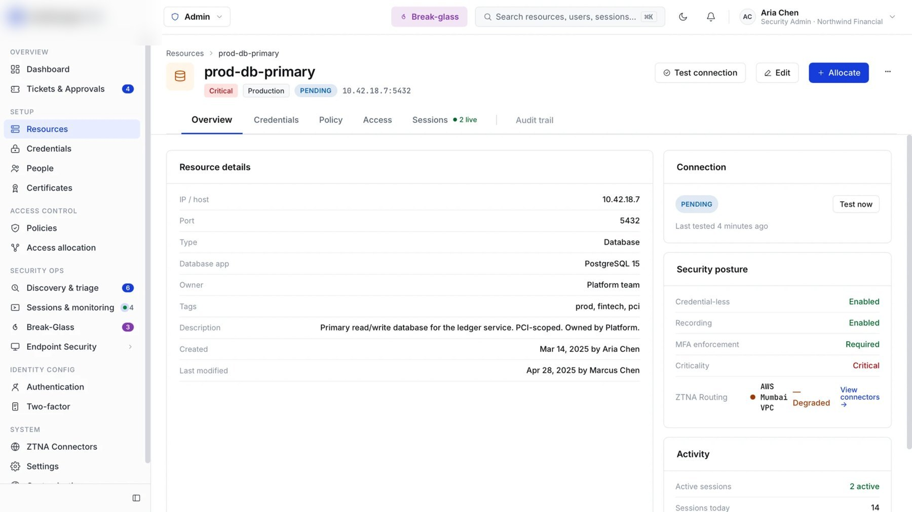
1one tab row, every task2MFA + recording3allocate from here
Navigation fixed where things live. These two fixes made sure admins understood what they saw and knew the moment something broke.
RC2
Language admins already speak
FIXES RC2
New admins spent their first week translating the interface. I rewrote the labels around the words admins use in their own runbooks and audit reports, not the words in our database schema.
BEFORE · OUR SCHEMAAFTER · THEIR JOBWHY IT MATTERED
System UsersCredentialsAdmins looked for server passwords under a label that sounded like people
UsersPeopleClashed with System Users, the most common first-day mix-up
All TicketsTickets & ApprovalsAccess requests read as a support inbox, not a governance step
Rotator InstanceAdmin AccountA developer label shown on every rotation setup
RC4
Failures you can see
FIXES RC4
Errors used to fail silently, so admins couldn’t tell what broke. Now errors and reconciliation issues surface inline, on the resource where they happened, along with what to do next. Name one concrete example, such as a failed credential rotation: what the admin saw before and what they see now.
BEFOREa plain user list. nothing says anything is wrong.
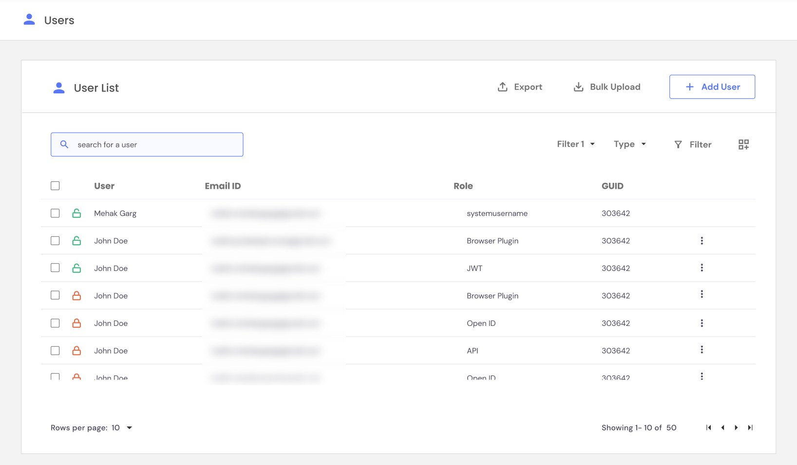
AFTER4 sync failures, counted, explained, with a next step.
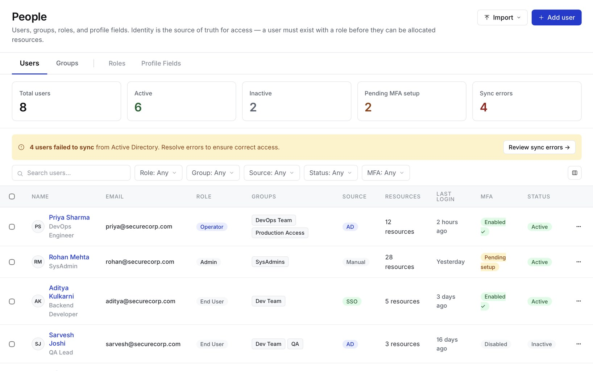
FIG. 5 — ONE ERROR STATE, BEFORE AND AFTERbefore, nothing · after, what broke and what to doNext: what it moved ↓
06 / 07
Outcome
$800K in new PAM sales the quarter after release. Deals that stalled at proof of concept started closing.
METRICBEFOREAFTERWHAT MOVED IT
Trial to paid conversion11%18%within 6 months · admins could run a proof of concept on their own, through onboarding checkpoints and intent based navigation
Time to deploy3 weeks1.5 weeksSeven-stage onboarding, each stage verified before the next
New salesStalling$800Kthe quarter after release · the two deal breaker flows fixed first
Critical workflows finish without leaving the resource.Errors and reconciliation issues surface inline. No more silent failures.Scope debates resolved in one meeting, not a quarter of workshops.
In security products, usability is a security control.
The audit was the whole projectEvery decision after it was implementing conclusions the team had already reached together. Two weeks of pushing back on screen redesigns saved months of redesigning the wrong screens.
Frameworks are conversationsRICE and Kano failed because the team used them to avoid talking about what mattered. One honest question did more than two scoring models.
WHAT I GOT WRONGCustomers migrating from another tool skipped onboarding stages, because they already knew what they wanted to set up. A persona is incomplete without knowing what the person is migrating away from.